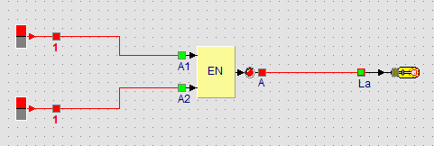

Lernpfad › Lektion 4 von 10

Eine Presse in einer Fabrik darf nur arbeiten, wenn der Bediener beide Knöpfe drückt, mit jeder Hand einen. So kann nie eine Hand unter der Presse sein. Das UND-Gatter macht genau das:
| Linke Hand (A1) | Rechte Hand (A2) | Presse (Lampe) |
|---|---|---|
| 0 | 0 | 0 |
| 0 | 1 | 0 |
| 1 | 0 | 0 |
| 1 | 1 | 1 |
Zwei Eingänge ergeben vier Möglichkeiten. Nur in der letzten Zeile ist der Ausgang ein.
Starten Sie die Simulation. Schalten Sie zuerst einen Schalter ein, dann den anderen, und beobachten Sie, wann die Lampe leuchtet. Gehen Sie so die vier Zeilen der Tabelle durch.
Die Presse darf erst arbeiten, wenn auch das Schutzgitter geschlossen ist: also drei Bedingungen. Ein UND-Gatter hat nur zwei Eingänge. Wie lösen Sie das?
Verwenden Sie zwei UND-Gatter hintereinander. Das erste Gatter bekommt die beiden Hände. Sein Ausgang geht zusammen mit einem dritten Schalter (dem Gitter) zum zweiten UND-Gatter. Die Lampe hängt am zweiten Gatter: Sie leuchtet nur, wenn alle drei ein sind.